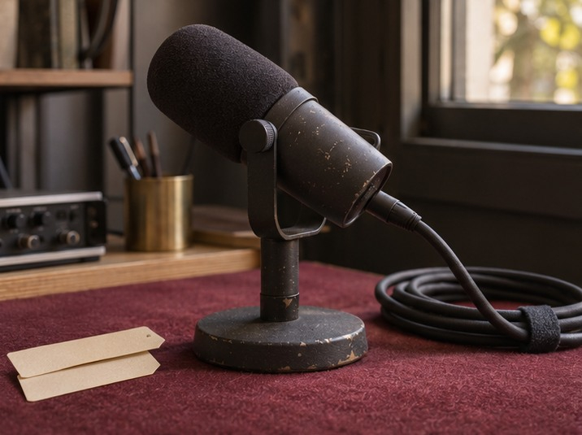
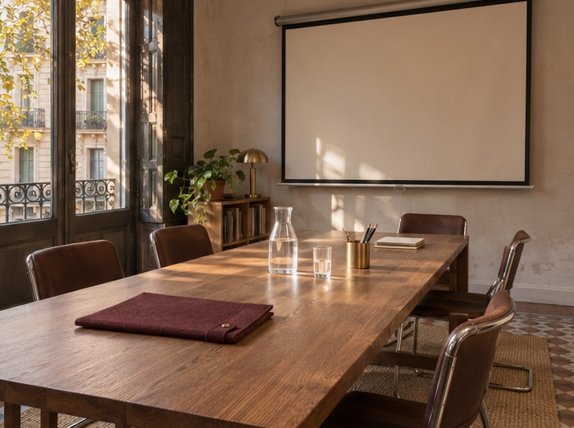
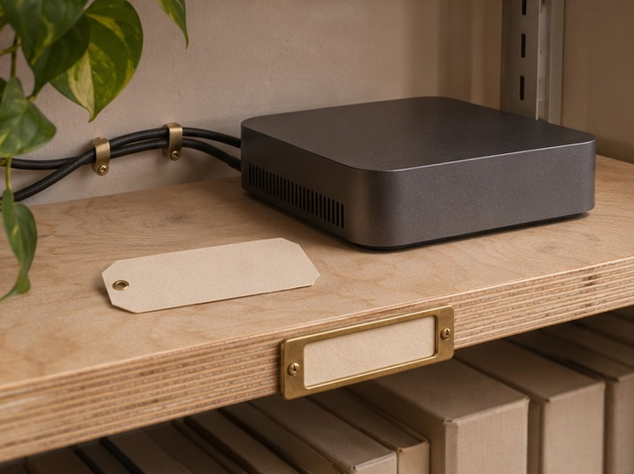
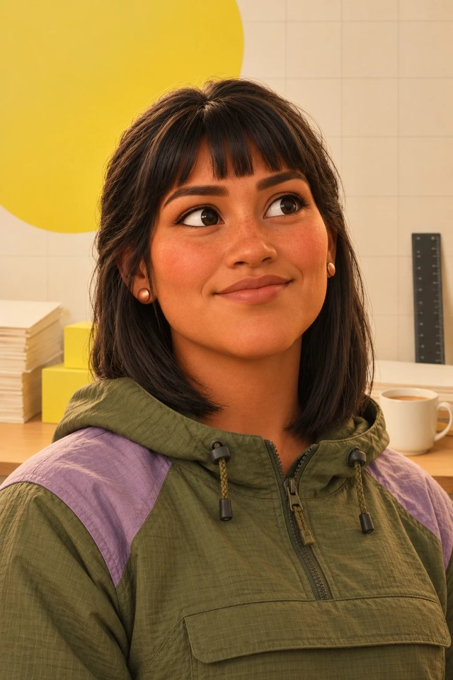
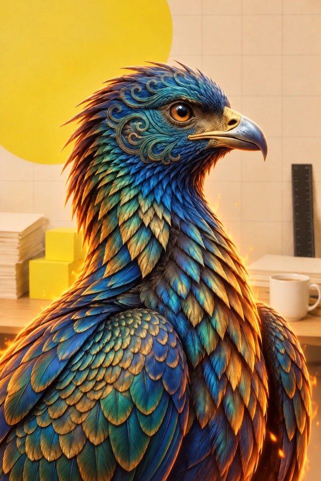

Treatment E / Identity study
In Good Order
Good work stays with the team.
Make work easy to hand over and easy to trace.

Good work stays with the team.
Make work easy to hand over and easy to trace.
Start with managers and hands-on teams already asking agents for real work. Lead with the point where an individual effort becomes useful to the group. Show one recognizable assignment, the result, who can review it, and where the group finds it tomorrow. Let that workflow explain the breadth of the operating system.

Use names for who does the work and infrastructure labels for where it runs. A group owns the work and governs access. 2lp is the runtime, a node hosts the runtime, and a seat is where an agent performs an assignment. Show the relationships as an indented record with group and agent above runtime details.
Put access next to the action it governs. Display the affected group, source, destination and capability before a consequential action takes place. When an action is blocked, name the missing capability and the appropriate next person. Keep the same scope visible on the confirmation and activity entry.

Group memory should read like an indexed body of decisions and useful context. Show the group as owner and the human or agent as contributor. A decision record names its source and date, and its permissions follow the group boundary. Give members a way to inspect the context behind a remembered decision.
Use oxblood wool felt as the material of a place to work and uncoated paper as the material of a record. The signature composition places a flush cream card over a felt field with a single exposed edge. Carry that edge into the interface as a fine rule alongside provenance and handoff details.


Shoot a card, a room, a microphone and a node at the scale people encounter them. Use sidelight to bring out paper grain and the nap of felt. Give each frame one visually legible action or purpose. Keep props plain enough for publishers to add real typography outside the photograph.
Use the commissioned portraits for Juan, Lola, Milo, Nando, Lisa and Maria from the existing agents source folder. Preserve facial features, expression, material detail and identifying parts of the original composition. Use a square derivative for directory cards, a 4:5 derivative where the master allows it, and a clearly labeled initials tile when a portrait is unavailable.
Lola’s brand story is dedicated capacity. She runs on her own node and has dedicated seats for Matt’s team. Pair her commissioned portrait with the photograph of a node while keeping the equipment in its own frame. In her profile, surface the group connection above the node and runtime details.
Follow Juan from a request to a shared artifact. In Rooms, show the slide as the object of the interaction and give it a visible source. Use the same commissioned Juan portrait and clear channel labels across Rooms, Juan Live and WhatsApp. That consistency helps someone recognize Juan while staying aware of where they are talking.
Show Milo through his work running the AI Engineers Barcelona podcast. Use the commissioned portrait for attribution and the microphone image for the setting. Build an episode case study around a single thread from outline and recording to the finished episode, with separate credit for any human contributions.

Treat Nando’s crew as a group with a shared job. Show Nando’s commissioned portrait beside a restrained roster and an artifact the crew is working on. Make the roles scannable with text labels. Where an individual contributor is identified, keep the crew visible alongside that person’s or agent’s credit.

Warm Paper #F7F0E3 anchors surfaces, Graphite #231E1B carries content, Oxblood #752B3C signals a primary action or editorial emphasis, and Brass #D5A24E marks physical tabs and highlighted areas with ink text. Paper and Graphite have 14.55:1 contrast, Paper and Oxblood 8.55:1, and Brass and Graphite 7.15:1.
Use Instrument Serif for cover lines and case-study titles, DM Sans for longer copy and all product actions, and IBM Plex Mono for sparse metadata. The serif gives the story editorial weight. The sans and mono keep names, states and timestamps distinguishable at the point of action.
Meet the team.
DM Sans / 0123456789Start with a one-color Shared wordmark, the paper-edge composition, a four-crop photography set, and approved portrait derivatives. Use a fine edge rule with a short perpendicular return as the recurring framing device on handoff records. Ship light and reversed wordmarks, accessible icon variants, and a source manifest for the photography and portraits.
A handoff card puts the artifact first, with actor, audience and current state directly beneath. Give it one primary action and a source link. On mobile, keep both the title and action visible at the top of the card and place longer context below. Use the paper edge to link related entries visually.
Use plain state names such as Ready, Working, Waiting for review, Blocked and Offline. Match each state to a recognizable icon and clear next action where one is available. Pair timestamps with the last verified result. Keep stale or unknown state explicit and give the user a way to check again.
When a reviewed handoff is confirmed, a new activity row appears with a short 120 ms fade. Keep a stable reading order, steady focus and a concise screen-reader announcement. Use a stationary icon and text for long-running work. At reduced motion, insert the row immediately with the same confirmation.
Say what happened, who was involved and what can happen next. Use everyday nouns for work, slides and decisions, and use product nouns when the audience is looking for controls. Keep marketing warm and action copy specific. Preserve names and group scope in every channel.
Juan prepared the slide. Anyone in this Room can view it when you present. [Present slide]
Matt and Rafa lead advocacy and training. Start with a pilot for Matt’s team using Lola’s dedicated seats, a Juan slide in Rooms, and a group memory entry for the decision. After the walkthrough, ask a new participant to find the decision, identify who can see it, and pick up the next action. Use what they miss to revise labels and training.
Keep the original image, name and identifying details together. A portrait identifies a character. Current responsibilities belong in the accompanying copy.


Keep the original image, name and identifying details together. A portrait identifies a character. Current responsibilities belong in the accompanying copy.



Set the handoff like a record. Keep actor, audience and source in a consistent order.